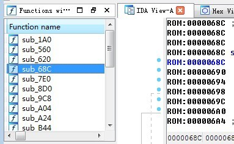

android手机内核提取及逆向分析
文章目录
Android手机获得Root权限,可以让/system和/data分区获得读写的权限.这两个分区的权限配置,一般在根分区的init.rc文件中,修改这个文件可永久获得root权限.
众所周知,市面上绝大部分的Android手机文件系统有三个分区,分别是/,/system,/data.根分区(/)是打包为ramdisk.img后,再与kernel的zImage打包为boot.img. boot.img在EMMC/NAND中以RAW DATA的形式存在,且除使用烧写工具外,无法读写.正因如此,根分区(/)在每次开机时都会从存储器中加载到RAM, 所以根分区(/)是难以不被刷机破解的.
那么如何破解？
获得boot.img,解压boot.img得到ramdisk.img, 再由ramdisk.img解压得到root目录（/）,修改其中的init.rc文件,再打包,最终得到新的boot.img.最后利用烧写工具将boot.img烧写到手机即可.(具体可参考AOSP/mkbootimg)
浅析boot分区结构
具体分析:
一. 提取kernel文件
(1)boot在哪里?通过下载官方的rom包,解压缩后可以看到里面的boot.img文件然后分解 关于rom包,简单介绍下里面的文件: boot.img Linux内核和基本文件系统的内核包 system.img 系统的/system目录 recovery.img 系统恢复程序所用的镜像 userdata.img 系统的/data目录 /data/app 用户应用程序 /system/app 系统应用 /system/fonts 字体 /system/media 开关机动画 /system/media/audio 其他音频，闹铃，提示音等 META-INF 刷机脚本信息和签名 /system/etc 系统配置文件夹，恢复出厂设置后都从这里和build.prop调用配置来覆盖出错的配置，里面init.d文件夹可以放入脚本，脚本名字前加数字表示优先级 build.prop 手机信息 (2.1)boot在哪里?真机中提取(这里以Samsung Galaxy S4 为例) adb shell 进入真机, ls -l /dev/block/platform/msm_sdcc.1/by-name msm 代表高通的芯片 这个msm_sdcc.1是外接的SD卡挂载的目录,by-name指的是这个sd卡分区的名称
现在可以通过dd命令将boot.img提取出来 dd if=/dev/block/mmcblk0p20 of=/sdcard/boot.img  (2.2)boot在哪里?真机中提取(这里以Lenovo A300t为例) 另一种查找boot.img的方法 首先介绍下手机分区信息: 主要有mtd分区和emmc分区 一般刷机包签名文件夹里的刷机脚本那里有updater-script文件. 例如： format(“ext4”, “EMMC”, “/dev/block/platform/xxxx”, “0”, “/system”)是EMMC分区的, format(“yaffs2”, “MTD”,"/dev/block/platform/xxxx", “0”, “/system”)是MTD分区的 MTD是用于访问memory设备（ROM、flash）的Linux的子系统.MTD的主要目的是为了使新的memory设备的驱动更加简单 EMMC 结构由一个嵌入式存储解决方案组成,带有MMC （多媒体卡）接口、快闪存储器设备及主控制器—— 所有都在一个小型的BGA 封装.接口速度高达每秒52MB,EMMC具有快速、可升级的性能
(2.2)boot在哪里?真机中提取(这里以Lenovo A300t为例) 另一种查找boot.img的方法 首先介绍下手机分区信息: 主要有mtd分区和emmc分区 一般刷机包签名文件夹里的刷机脚本那里有updater-script文件. 例如： format(“ext4”, “EMMC”, “/dev/block/platform/xxxx”, “0”, “/system”)是EMMC分区的, format(“yaffs2”, “MTD”,"/dev/block/platform/xxxx", “0”, “/system”)是MTD分区的 MTD是用于访问memory设备（ROM、flash）的Linux的子系统.MTD的主要目的是为了使新的memory设备的驱动更加简单 EMMC 结构由一个嵌入式存储解决方案组成,带有MMC （多媒体卡）接口、快闪存储器设备及主控制器—— 所有都在一个小型的BGA 封装.接口速度高达每秒52MB,EMMC具有快速、可升级的性能
cat /proc/mtd
可以通过同样的方式,使用dd命令,将boot.img文件提取出来. 之后我们可以通过adb pull的方式把从真机中提取的boot.img文件提取到本地.之后用split_boogimg.pl 将提取的boot.img分解出来,可以得到boot.img-kernel
二. 逆向分析kernel文件:
一般来说,这个kernel内核文件都是一个gzip的压缩格式,偶尔也会有其他的压缩算法.比如三星S5内核文件的压缩算法是lzop 为什么是这样的情况呢?简要说下:
Kernel被载入内存后是以压缩的状态存放在磁盘之上的,他头上的一段代码就是为了初始化并且解压缩的一段代码.这段代码把自身压缩的一部分代码解压出来.放到真正内核所在的位置上.所以他所用的压缩算法要从他头上那段来指定的.所以如果今后厂商使用一些自己的压缩算法,那么需要更多逆向分析的.  这样我们可以通过一个解压缩的脚本,解压出真正的内核文件.一个二进制文件zImage.
这样我们可以通过一个解压缩的脚本,解压出真正的内核文件.一个二进制文件zImage.
#!/bin/bash pos=`grep -P -a -b -m 1 –only-matching ‘\x1F\x8B\x08’ zImage | cut -f 1 -d :` echo “Extracting gzip’d kernel image from file: zImage (start = $pos)”
if [ ! -z $pos ]; then echo “Dumping compressed image” dd if=zImage of=zImage_unpacked.gz bs=1 skip=$pos 2>/dev/null >/dev/null echo “Unzipping compressed image” gunzip -qf zImage_unpacked.gz fi

现在可以将它导入到IDA中分析,但是导入IDA后发现效果很不理想

这是因为我们需要符号表.但是android的linux内核是一个平面结构,它没有符号表.如果大家编译过linux内核可以发现编译好的zImage被打包到boot.img文件中去,下面有个巨大的vmlinux,它放到gdb里面去调试可以看到完整的符号表和调试信息.刷入手机的版本是没有的. 但是在/proc/kallsyms可以提供所有的kernel symbol cat /proc/kallsyms 会发现地址都是0 为什么地址都是0呢? 因为有一个patch 在/proc/sys/kernel/kptr_restrict默认为1，就隐藏了symbol 只要我们将其置0就可以正常打印 如果我们之前在刷机的过程中放进去一个su授权文件,那么我们就可以
echo 0 > /proc/sys/kernel/kptr_restrict cat /proc/kallsyms > /data/local/tmp/syms.txt
但是我们目的是为了root,这里如果没有su文件呢?
我们还有其他的方法.kallsyms既然可以打印symbol,那么说明symbol肯定在内核之中的.它就在__ksymtab里面.我们肯定可以知道一些常见的内核函数,比如kallsyms_lookup_name.我们可以在这个内核的二进制文件中找它的字符串.找到它的相对位置后,然后拿它的地址去搜索
我们可以搜到一个结构
从0xC0008000开始暴力搜索连续若干个具有上面的特征的内存,就可以找到内核的导出符号表
有了符号地址后,手动在ida中添加
这个添加部分应该可以用ida写一个脚本来做, 有时间看看!
文章作者 忆杰
上次更新 2015-08-05